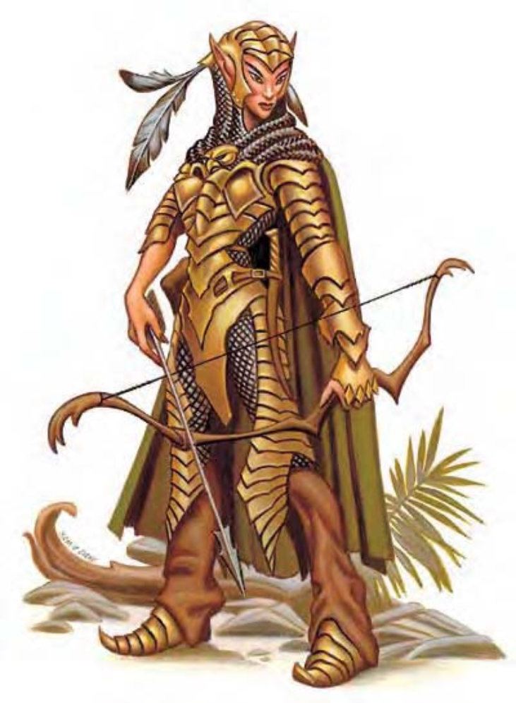
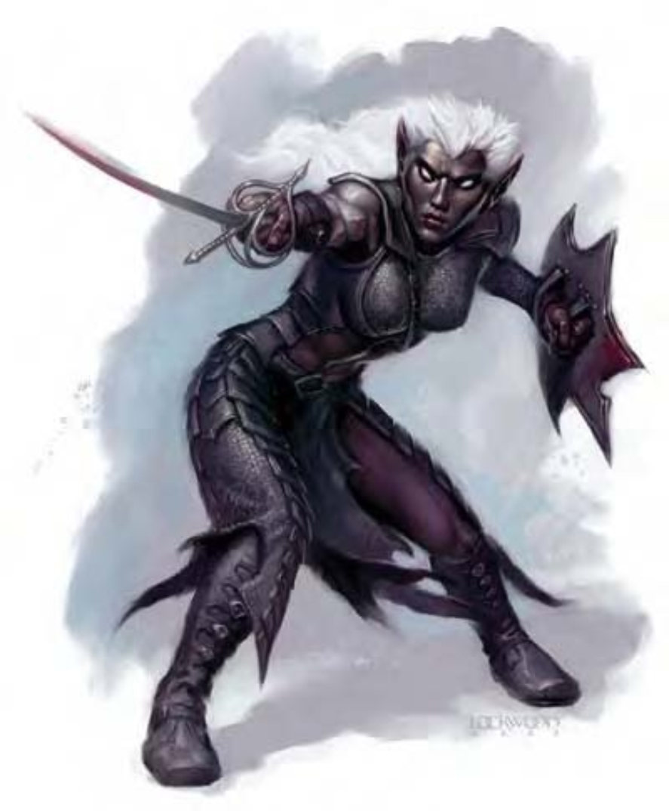

精灵的外型很接近人类，但高度略矮，身材修长，肤色苍白而头发漆黑。长椭圆形的头部两侧生有一对尖耳朵，穿着的盔甲带着浓浓原始森林风味，像是天然生成而非人工打造。
精灵是森林的守护者，漫长的一生都花在研读魔法和磨练剑术之上。
精灵平均身高5英尺，体重在100磅上下。虽然也会猎食肉类，但主要以水果和谷物为生。精灵偏好色彩鲜明的衣服，通常会在外面罩上一件灰绿色的斗篷，以便融入森林环境的色调。
精灵欣赏美丽的事物，会佩带精致的首饰和鲜艳的花朵，服装和工具上也都会镶嵌精美的装饰品。
如同矮人对金属和岩石的天赋一样，精灵也是出色的工匠，但专长的领域却是木头和金属制品。即使在其他生物族群中，精灵制造的手工艺品也获得相当高的评价。某些精灵聚落光靠出售这些手工艺品给森林外的生物，就可以过着非常富裕的生活。
精灵通晓精灵语，大部分也通晓通用语和木族语。
在家乡之外出没的精灵多为武者，数据域位中为1级武者的范例。
战斗精灵生性小心谨慎，如果情况允许，他们会花时间仔细分析敌人和地理条件，擅用突袭、狙击和伪装等种种战术。精灵最喜欢的战斗方式是从掩蔽物后方进行远程攻击，并在行踪暴露之前转进到另一个地点，反复突袭直到消灭敌人。精灵爱用的武器包括：长弓、短弓、细剑和长剑。近战时，精灵动作优雅而致命，喜好华丽繁复的招式。精灵法师通常会在战斗中施展“睡眠术”，因为精灵对此效果免疫。
精灵特性 (特异)：精灵具有下列种族特性：
― +2敏捷、-2体质。
― 中型。
― 精灵的基本行走速度为30英尺。
― 对“睡眠术”免疫，对附魔系法术与效果的豁免检定有+2种族加值（并未计入数据域位的豁免检定数据中）。
― 昏暗视觉。
― 武器擅长：精灵擅长长剑、细剑、长弓、复合长弓、短弓和复合短弓。
― 进行“聆听”、“搜索”和“侦察”检定时具有+2种族加值。若无意间经过密门，且距离该密门5英尺内，精灵即会自动进行“搜索”检定，一如主动寻找密门。
― 母语：通用语、精灵语。额外语言：龙语、豺狼人语、侏儒语、地精语、兽人语、木族语。
― 适合职业：法师。
此处列出的精灵武者在计算种族修正值前，具有下列属性：力量13、敏捷11、体质12、智力10、感知9、魅力8。
精灵坚信，个人的独立自由不能受到文明社会的刻板规范所钳制，因此他们会组成小群落散居或四处游历。这些小群落名义上会接受贵族统治，但约束力并不强，而精灵贵族则向王室效忠（王室通常也辖有直属的群落）。
精灵和自然界和平相处，会搭建能与周围树林溶为一体的营地，甚至盖在浓密的枝桠之间，以免外界打扰。精灵营地通常都会有动物或巨鹰负责守卫，非战斗人员数量（大部分是小孩）约为战斗人员的20%。精灵社会中，两性的地位完全平等，男女都可以担任组织中各种角色。
因为寿命很长，精灵的眼光非常远大而有耐性，懂得欣赏自然界种种历久弥新的美景。他们不会短视近利，也愿意研读需要投入大量心力的才能，例如：故事、音乐、艺术和舞蹈等。不过，别被他们在音乐和手艺上的高度成就所蒙蔽，精灵不仅是出色艺术家，也是优秀的战士，致力保护森林不受邪恶侵害。
精灵不需要太多食物，虽然是杂食性，但偏好植物而非肉类。造成这种饮食习惯的原因之一是他们亲近自然（比起猎杀动物来说，采集植物对自然的破坏要小得多），此外则是因为他们喜欢四处游历，而植物比肉类容易保存。
精灵信仰的主神是柯瑞隆・拉瑞辛，精灵神族的创造者和守护者。
亚族以上列出的数据乃是针对高精灵，这也是精灵族群中数量最多的一支。撇开高精灵不论，还有五个常见的精灵亚族。除此之外，以下也包含半精灵的说明，因为他们跟精灵有许多共同点。
严格来说，半精灵并非精灵亚族，但他们常常会被误认为精灵。有些半精灵会被父母双方的社会放逐，有些则被精灵或人类其中一方所接纳，端视两个族群相处的状况而各有不同。半精灵的大部分生理特征通常继承自双亲，因此，半水生精灵的皮肤呈绿色；而半黑暗精灵的肤色较深，发色偏淡。
半精灵特性 (特异)：半精灵具有下列种族特性：
中型体型。
― 半精灵的基本行走速度为30英尺。
― 对魔法睡眠效应免疫，对附魔系法术与效应的豁免检定有+2种族加值（并未计入数据域位的豁免检定数据中）。
― 昏暗视觉。
― 进行“聆听”、“搜索”和“侦察”检定时具有+1种族加值。与精灵不同，半精灵不能察觉无意间经过的密门。
― 进行“交涉”、“搜集信息”检定时具有+2种族加值：半精灵和所有人都处得来。此加值有时在敌视半精灵的环境或背景下无效（举例来说，远离尘嚣的人类殖民地），端赖DM自行判断。
― 精灵血统：所有种族相关的效应，半精灵都视同精灵。例如：影响精灵的特殊效应，也影响半精灵。只有精灵能用的魔法物品，半精灵也可使用。
― 母语：通用语、精灵语。额外语言：任何语言（神秘语言除外，例如：德鲁伊语）。
― 适合职业：任何职业。半精灵兼职时，其最高等级职业不计入经验值减值。
这个人形生物比人类略矮，身材瘦长，皮肤呈现带有光泽的浅绿色，头发更是如同翡翠般的亮绿色，有一对尖耳朵，手指和脚指之间有蹼。
水生精灵又称海精灵，是可以在水中呼吸的精灵亚族。他们喜欢和鲸豚之类的水中生物一起翱游四海。在水中作战时，水生精灵会使用三叉矛、矛和网子。
大部分水生精灵信仰深洋・沙夏勒斯，掌管知识和美丽的海神。
水生精灵特性 (特异)：水生精灵比高精灵多出以下特性（除非个别叙述中另有说明）：
― +2敏捷、-2智力。这些调整值会取代高精灵的属性调整值。
― 水生精灵属于水生亚种。
― 水生精灵游泳速度40英尺。
― 鳃：水生精灵可以在水中呼吸，每1点体质值可存活1小时（若超过时间，请参阅《地下城主指南》第304页关于窒息的说明）。
― 远距昏暗视觉：在星光、月光、火把或类似的昏暗照明条件下，水生精灵可以看见人类视觉四倍远的距离。此项能力取代高精灵的昏暗视觉。
― 适合职业：战士。此项特性取代高精灵的适合职业。

这个人形生物比人类略矮，身材瘦长，皮肤漆黑，头发雪白。
黑暗精灵又称为卓尔精灵 (Drow)，栖息在地底，是堕落而邪恶的精灵亚族。
绝大部分黑暗精灵的头发都偏白，但也可能是其他较浅的颜色。比起其他精灵，黑暗精灵的体型更矮更瘦，双眼多半是红色。黑暗精灵属于母系社会，而且受严密的牧师系统所统治。
黑暗精灵信仰的主神是蜘蛛神后罗丝，女性黑暗精灵的适合职业是牧师，而非法师，可由下列领域择二：混乱、破坏、邪恶或诡术。
黑暗精灵通常会在箭镞上涂满强力毒素。
毒素 (特异)：被黑暗精灵的淬毒武器击中的生物必须通过强韧检定 (DC=13)，否则会陷入昏迷。一分钟后必须再次进行强韧检定 (DC=13)，否则会持续昏迷不醒2d4小时。黑暗精灵身上多半会携带1d4-1剂黑暗精灵蒙汗药，通常抹在箭矢上，但有时也会抹在近战武器上。值得注意的是，黑暗精灵并没有任何用毒的特殊能力，所以抹毒时还是可能会伤到自己。因为黑暗精灵蒙汗药并非魔法效应，黑暗精灵或其他精灵对此没有免疫力。
黑暗精灵特性 (特异)：黑暗精灵比高精灵多出以下特性（除非个别叙述中另有说明）：
― +2智力、+2魅力。
― 黑暗视觉可达120英尺。此项能力取代高精灵的昏暗视觉。
― 法术抗力=11+职业等级。
― 对抗法术和类法术能力的“意志”检定可获得+2种族加值。
― 类法术能力：黑暗精灵可以使用下列类法术能力，每天1次：“舞光术”、“黑暗术”、“妖火”。施法者等级等于黑暗精灵的职业等级。
― 武器擅长：黑暗精灵擅长单手十字弓、细剑和短剑。此项特性取代高精灵擅长的武器。
― 母语：通用语、精灵语、地底通用语。额外语言：深渊语、水族语、龙语、黑暗精灵手语、侏儒语、地精语、寇涛语。此项特性取代高精灵的母语和额外语言。
― 光照目盲：突然曝露在强光下（例如阳光或昼明术）会让黑暗精灵目盲一轮。若仍停留在强光下，则后续每轮都会陷入目眩。
― 适合职业：法师 (男性) 或牧师 (女性)。此项特性取代高精灵的适合职业。
― 等级调整值+2。
此处列出的黑暗精灵在计算种族修正值前，具有下列属性：力量13、敏捷11、体质12、智力10、感知9、魅力8。
挑战级数：若具有非玩家人物职业，黑暗精灵的挑战级数等于人物等级。若具有玩家人物职业，则挑战级数等于人物等级+1。
这个人形生物身材硕长，跟人类几乎一样高，皮肤苍白，毛发深黑，有一对尖耳朵。
灰精灵是精灵种族中最尊荣高贵的一支，外表上也比其他同族高大挺拔。然而正因如此，灰精灵的态度相当冷漠疏远（即使以精灵的标准来说）。他们比高精灵更加远离尘嚣，通常将根据地建在偏远的山区，只有少数外人可以破例造访。一部分灰精灵有银色头发和琥珀色眼珠，其他则是淡金色头发和紫色眼睛。灰精灵偏好白色、银色、黄色或金色的服饰，外面罩着深蓝或紫色的斗篷。
灰精灵特性 (特异)：灰精灵比高精灵多出以下特性（除非个别叙述中另有说明）：
― +2智力、-2力量。
这个人形生物比人类略矮，身材瘦长，深棕色皮肤，黑色头发，还有一对尖耳朵。
野精灵也被称为葛鲁喀，野蛮而且文明水平不高。
野精灵的发色介于黑色到浅棕色之间，随着年岁渐长，会慢慢变成银白色。野精灵通常穿着动物毛皮和植物纤维制成的衣物。虽然其他精灵认为他们很野蛮，但野精灵认为自己才是真正的精灵，因为其他亚族在接受文明洗礼之后已经失去原始的精灵本质。由于粗鲁不文的个性，野精灵适合的职业是术士而非法师，不过也有许多选择成为野蛮人。
野精灵特性 (特异)：野精灵比高精灵多出以下特性（除非个别叙述中另有说明）：
+2敏捷、-2智力。这些调整值会取代高精灵的属性调整值。
― 适合职业：术士。此项特性取代高精灵的适合职业。
木精灵有时也称为森林精灵，栖息在原始森林的最深处。木精灵头发的颜色介于黄色到赤铜色之间，肌肉比其它精灵要来得发达。他们通常穿着墨绿色或土黄色的衣物，以便融入周遭自然环境。木精灵居所附近通常有巨猫头鹰巨枭或豹担任守卫。
木精灵特性 (特异)：木精灵比高精灵多出以下特性（除非个别叙述中另有说明）：
― +2力量、-2智力。
― 适合职业：巡林客。此项特性取代高精灵的适合职业。
| 资料栏位 | 精灵、1级武者 | 黑暗精灵、1级武者 |
|---|---|---|
| 生命骰 | 1d8 (4HP) | 1d8 (4HP) |
| 先攻 | +1 | +1 |
| 速度 | 30英尺 (6格) | 30英尺 (6格) |
| 防御等级 | 15 (+1敏捷、+3镶嵌皮甲、+1轻型盾)、接触11、措手不及14 | 16 (+1敏捷、+4炼甲衫、+1轻型盾)、接触11、措手不及15 |
| 基本攻击/擒抱 | +1 / +2 | +1 / +2 |
| 攻击 | 长剑+2近战 (1d8+1 / 19-20)；或长弓+3远程 (1d8 / ×3) | 细剑+3近战 (1d6+1 / 18-20)；或单手十字弓+2远程 (1d4 / 19-20) |
| 全力攻击 | 长剑+2近战 (1d8+1 / 19-20)；或长弓+3远程 (1d8 / ×3) | 细剑+3近战 (1d6+1 / 18-20)；或单手十字弓+2远程 (1d4 / 19-20) |
| 占用空间/可触距离 | 5英尺 / 5英尺 | 5英尺 / 5英尺 |
| 特殊攻击 | 无 | 毒素、类法术能力 |
| 特殊能力 | 精灵特性 | 黑暗精灵特性、法术抗力12 |
| 豁免检定 | 强韧+2、反射+1、意志-1* | 强韧+2、反射+1、意志-1* |
| 属性 | 力量13、敏捷13、体质10、智力10、感知9、魅力8 | 力量13、敏捷13、体质10、智力12、感知9、魅力10 |
| 技能 | 躲藏+1、聆听+2、搜索+3、侦察+2 | 躲藏+0、聆听+2、搜索+4、侦察+3 |
| 专长 | 专攻武器 (长弓) | 专攻武器 (细剑) |
| 环境 | 温带森林 (半精灵：温带森林) (水生精灵：温带水) (灰精灵：温带山脉) (野精灵：热暖带森) (木精灵：温带森林) | 地底 |
| 组织 | 中队 (2-4)、一伙 (11-20，加上2个3级军士及1个3-6级干部) 或一团 (30-100，加上20%非战斗人员、加上每10个成年精灵1个3级军士、5个5级校尉及3个7级队长) | 中队 (2-4)、巡逻队 (5-8，加上2个2级军士及1个3-6级干部) 或一团 (20-50，加上10%非战斗人员、加上每5个成年黑暗精灵1个2级军士、2d4个6级校尉及1d4个9级队长) |
| 挑战级数 | 1/2 | 1 (见说明) |
| 宝藏 | 标准 | 标准 |
| 阵营 | 通常混乱善良 (木精灵：通常绝对中立) | 通常中立邪恶 |
| 进化 | 视人物职业而定 | 视人物职业而定 |
| 等级修正值 | +0 | +2 |